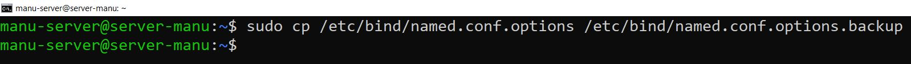

Práctica 4.1 - Configuración de un servidor DNS
Autor: Manuel Gómez Ruiz
Asignatura: Despliegue de Aplicaciones Web
Fecha: 14/01/2024
Curso: 2º de Desarrollo de Aplicaciones Web
Práctica 4.1: Configuración de un servidor DNS
Nota importante
Antes de empezar la práctica, recuerda eliminar las entradas del archivo /etc/hosts para asegurar que la resolución de nombres va a nuestro servidor DNS.
En mi caso no las he eliminado, sino que las he comentado por si tengo que usarlas en el futuro, es lo mismo ya que dejan de ejecutarse en el script al comentarlas.

IPS DEL SERVIDOR Y CLIENTE
He usado el comando ip a para mostrar mis datos de configuración de red tanto del servidor como del cliente, y que sea más fácil entender los siguientes pasos.
La IP de mi servidor DNS es 192.168.116.163

La IP de mi cliente es 192.168.116.169
Habilita el puerto 53 tanto para el servidor como para el cliente, para ello antes debes instalar el paquete ufw para gestionar los puertos, comandos sudo apt install ufw y sudo ufw allow 53.

Instalación de servidor DNS
Vamos a utilizar el paquete Bind que es una herramienta de software libre para plataformas Unix y Linux, y que es estándar para servidores DNS.
Para instalarlo introduce el comando: sudo apt-get install bind9 bind9utils bind9-doc.

Configuración del servidor
Accedemos al archivo named.conf dentro de /etc/default y modificamos la línea OPTIONS para indicar que solo queremos configurar y usar IPv4.
Comando para acceder al archivo: sudo nano /etc/default/named y modificamos la línea OPTIONS con OPTIONS = "-u bind -4" para que sólo use IPv4.
Acceso al archivo de configuración principal del servidor DNS Bind. En este archivo se define como se comporta el servidor y que otros archivos de configuración se incluirán, en este caso se incluye el archivo named.conf.options para configuraciones globales, como opciones de red y directivas generales del servidor y named.conf.local donde se definen las zonas directas e inversas para dominios personalizados.
Comando sudo nano /etc/bind/named.conf.

Configuración named.conf.options
Hacemos una copia de seguridad antes de modificar el archivo de configuración named.conf, para evitar posibles problemas.
Comando sudo cp /etc/bind/named.conf.options /etc/bind/named.conf.options.backup.

Editamos el archivo named.conf.options y incluimos por motivos de seguridad, una lista de acceso para que solo puedan realizar consultas recursivas al servidor aquellos hosts que decidamos, denegamos las transferencias de zona, configuramos el puerto DNS 53 con nuestra IP de red privada, y comentamos la última línea listen-on-v6 { any;};.
Archivo /etc/bind/named.conf.options
acl confiables {
192.168.116.0/24;
};
options {
directory "/var/cache/bind";
// If there is a firewall between you and nameservers you want
// to talk to, you may need to fix the firewall to allow multiple
// ports to talk. See http://www.kb.cert.org/vuls/id/800113
// If your ISP provided one or more IP addresses for stable
// nameservers, you probably want to use them as forwarders.
// Uncomment the following block, and insert the addresses replacing
// the all-0's placeholder.
// forwarders {
// 0.0.0.0;
// };
allow-query {confiables;};
allow-recursion {confiables;};
allow-transfer {none;};
listen-on port 53{192.168.116.163;};
//listen-on-v6 {none;};
recursion yes;
//========================================================================
// If BIND logs error messages about the root key being expired,
// you will need to update your keys. See https://www.isc.org/bind-keys
//========================================================================
dnssec-validation no;
// listen-on-v6 { any; };
};

Comprobamos que la configuración del archivo anterior es correcta, con el comando sudo named-checkconf, si no devuelve nada esta correcto, en caso contrario devolverá la línea donde ocurrió el error.

Reiniciamos el servicio named y comprobamos que su estado es correcto.
Comandos: sudo systemctl restart named y sudo systemctl status named.
Configuración named.conf.local
Accedemos a este archivo que está dentro de /etc/bind/ y definimos una nueva zona, con un servidor DNS maestro y la ubicación del archivo de zona directa que después crearemos.
Comando: sudo nano /etc/bind/named.conf.local.
Archivo /etc/bind/named.conf.local
//
// Do any local configuration here
//
// Consider adding the 1918 zones here, if they are not used in your
// organization
//include "/etc/bind/zones.rfc1918";
zone "manuelgom.es" {
type master; // Define esta zona como principal
file "/ect/bind/db.manuelgom.es"; // Ruta donde ubicamos nuestro archivo de zona
};

Creación del archivo de zona
Creamos el archivo de zona de resolución directa en el directorio previamente indicado y con el mismo nombre, esta zona será la encargada de traducir nombres de dominio en direcciones IP.
Los registros SOA detallan aspectos de la zona autoritativa, los NS indican los servidores DNS de la zona, en mi caso ns1.manuelgom.es es el servidor responsable de mi zona, y los A asignan un subdominio a las IPs respectivas para resolver consultas relacionadas con ese nombre, en mi caso usaré un subdominio distinto del servidor para el cliente, ya que es lo más adecuado.
Comando: sudo nano /etc/bind/manuelgom.es.
Archivo /etc/bind/db.manuelgom.es
$TTL 604800
@ IN SOA ns1.manuelgom.es. admin.manuelgom.es. (
2025011610 ;Serial
3600 ;Refresh
1800 ;Retry
604800 ;Expire
86400 ;Negative Cache TTL
)
;Definimos el servidor de nombres
IN NS ns1.manuelgom.es.
;Definimos la IP del servidor de nombre y del cliente
ns1 IN A 192.168.116.163
www IN A 192.168.116.169
Creación del archivo de zona para la resolución inversa
Ahora debemos de modificar el archivo named.conf.local y añadir las líneas correspondientes a la zona inversa, que será la encargada de traducir direcciones IP a nombres de dominio.
Comando: sudo nano /etc/bind/named.conf.local.
Archivo /etc/bind/named.conf.local
//
// Do any local configuration here
//
// Consider adding the 1918 zones here, if they are not used in your
// organization
//include "/etc/bind/zones.rfc1918";
zone "manuelgom.es" {
type master;
file "/etc/bind/db.manuelgom.es"; // Ruta donde ubicamos nuestro archivo de zona
};
zone "116.168.192.in-addr.arpa" {
type master;
file "/etc/bind/db.116.168.192"; // Ruta donde ubicamos nuestro archivo de zona inversa
};

Creamos el archivo de configuración SOA para la zona inversa, y definimos el servidor de nombres, y el valor del último octeto de bits en decimal, tanto del servidor como del cliente con un registro PTR, que convierte la dirección IP al nombre de dominio.
Comando sudo nano /etc/bind/db.116.168.192
Archivo /etc/bind/db.116.168.192
$TTL 604800
@ IN SOA ns1.manuelgom.es. admin.manuelgom.es. (
2025011604 ;Serial
3600 ;Refresh
1800 ;Retry
604800 ;Expire
86400 ;Negative Cache TTL
)
;Definimos el servidor de nombres
IN NS ns1.manuelgom.es.
; Registros PTR
163 IN PTR ns1.manuelgom.es.
169 IN PTR www.manuelgom.es.
Comprobación de las configuraciones
Comprobación de la zona de resolución inversa, con el comando sudo named checkzone db.116.168.192.

Comprobación de la zona de resolución directa, con el comando sudo named checkzone db.manuelgom.es db.116.168.192.
Reiniciamos el servicio y comprobamos que su estado sea correcto, sudo systemctl restart named y sudo systemctl status named.

Atención. Es muy importante que el cliente esté configurado para usar como servidor DNS el que acabamos de instalar y configurar. Ya sea Windows, ya sea Linux, debéis cambiar vuestra configuración de red para que la máquina con la que hagáis las pruebas utilice este servidor DNS como el principal.
Añadimos el DNS de nuestro servidor en el cliente, modificando el archivo /etc/hosts, en este archivo deja tu puerta de enlace, y añade tu dominio DNS y su IP respectiva, y una vez nos aseguramos que la configuración es correcta, utiliza el comando sudo chattr +i /etc/hosts para hacer inmutable el archivo de configuración y que no se modifique por el servicio NetworkManager cuando reiniciemos el adaptador de red o la máquina, para reiniciar el adaptador y asegurarnos de que los cambios se apliquen usa el comando sudo systemctl restart networking.service.
Comprobación de las resoluciones y las consultas
Podemos comprobar desde los clientes con nslookup y dig las resoluciones directa e inversa, comprobando el acceso a nuestro servidor DNS mediante los comandos nslookup y dig.
Resolución directa con nslookup.

Resolución inversa con nslookup.
Resolución directa con dig -x.
Resolución inversa con dig.

Cuestiones finales
Cuestión 1: ¿Qué pasará si un cliente de una red diferentes a la tuya intenta hacer uso de tu DNS de alguna manera, le funcionará?¿Por qué, en qué parte de la configuración puede verse?
No, debido a que en el archivo /etc/bind/named.conf.options le hemos indicado que los que pueden hacer uso de nuestro DNS son los dispositivos dentro de la red 192.168.116.0/24 mediante la ACL confiables.
Cuestión 2: ¿Por qué tenemos que permitir las consultas recursivas en la configuración?
Para permitir que nuestro servidor DNS actué como intermediario y realize búsquedas en otros servidores DNS, preguntándoles si conocen la IP asociada al recurso que está solicitando nuestro cliente, una vez que la encuentra el contenido es visible por pantalla.
Cuestión 3: El servidor DNS que acabáis de montar, ¿es autoritativo?¿Por qué?
Sí, porque queremos especificar información sobre nuestra zona DNS, como el servidor de nombre primario, el email del administrador, y varios temporizadores sobre como funcionará nuestro servicio, para ello debemos definir el servidor de nombre primario (SOA).
Cuestión 4: ¿Dónde podemos encontrar la directiva $ORIGIN y para qué sirve?
Transforma los nombre que no acaben en punto (nombre de dominio base) convirtiéndolos en nombres FQDN (fully qualified domain name).
Cuestión 5: ¿Una zona es idéntico a un dominio?
No, una zona es una parte del dominio que está gestionada por un servidor DNS.
Cuestión 6: ¿Pueden editarse los archivos de zona de un servidor esclavo/secundario?
No, los archivos de un servidor esclavo son obtenidos de otro servidor autorizado para la zona, normalmente, de un servidor maestro maestro mediante transferencia de zona, los ficheros son de solo lectura, por lo tanto, no se pueden modificar.
Cuestión 7: ¿Por qué podría querer tener más de un servidor esclavo para una misma zona?
- Para reducir y repartir la carga entre varios servidores DNS.
- Tener mayor torelancia a fallos. Si uno de los servidores falla, los esclavos pueden seguir respondiendo las consultas de los clientes.
- Ofrecer mayor rapidez, mejora el tiempo de respuesta en usuarios de otras regiones.
Cuestión 8: ¿Cuántos servidores raíz existen?
Existen 13 servidores raíz identificables por letras (de la A a la M), pero cada uno de ellos tienen copias distribuidas por todo el mundo mediante Anycast para garantizar su disponibilidad y rendimiento, tanto los servidores raíz como las copias son identificables mediante la misma IP.
Cuestión 9: ¿Qué es una consulta iterativa de referencia?
Es una respuesta parcial a la consulta, en la que nuestro servidor DNS indica otros servidores a los que se le puede consultar para resolver el nombre.
Cuestión 10: En una resolución inversa, ¿a qué nombre se mapearía la dirección IP 172.16.34.56?
56.34.16.172.in-addr.arpa